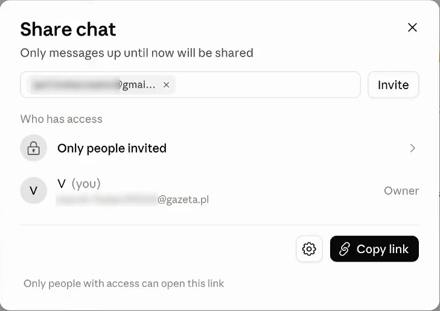
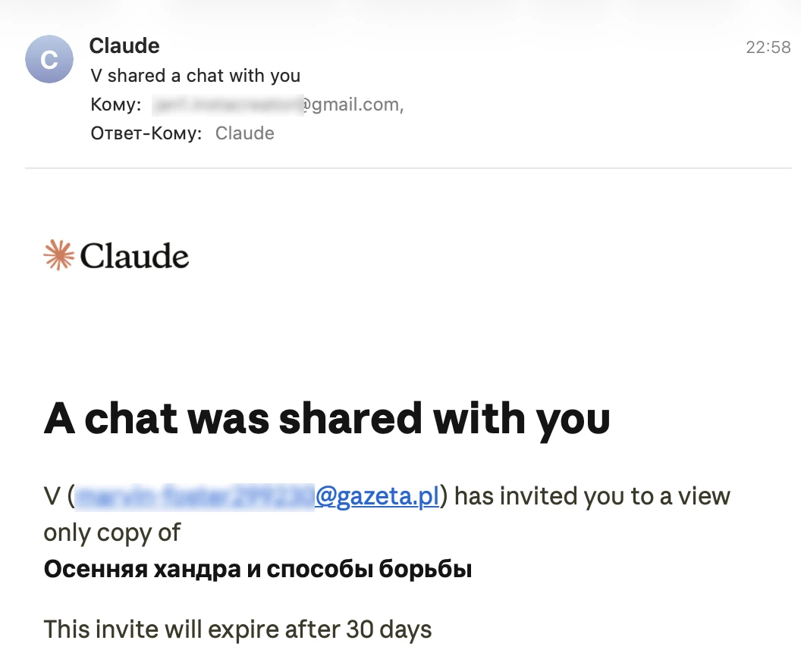
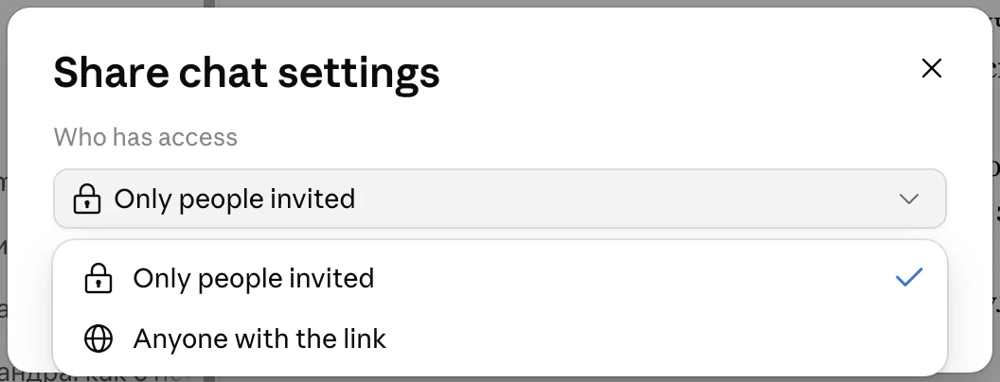
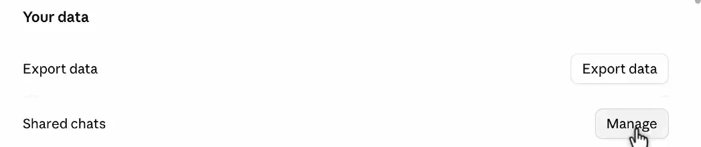
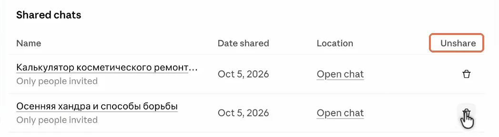

Claude.ai · публичные ссылки

Как отозвать публичную ссылку на чат Claude
Начальный уровень
Удачный разговор с Claude хочется показать: кинуть ссылку коллеге или в рабочий чат. Только по такой ссылке открывается не один ответ, а вся переписка выше, вместе с тем, что писалось не для чужих глаз. А если открыт доступ по ссылке, её читает любой, кому ссылку переслали дальше. Задача давно закрыта, а разговор всё ещё открыт.
Ссылку можно отключить за пару нажатий, и по ней больше ничего не откроется. Ниже по шагам: где найти все созданные ссылки, как отключить доступ и что останется у тех, кто успел прочитать или сохранить разговор.
Как устроена ссылка
Как поделиться перепиской и кто сможет её прочитать
Обычно разговоры с Claude видишь только ты. Чтобы показать беседу другому человеку, открой её и нажми кнопку Share («Поделиться») в правом верхнем углу. Откроется окно Share chat. Под заголовком написано Only messages up until now will be shared: человек увидит переписку только до этого момента.

Share chat: сверху поле для почты, ниже строка, кто может открыть ссылку. Начало адресов скрытоПоделиться можно двумя способами. Первый: впиши почту человека в поле Add people by email и нажми Invite («Пригласить»). Ему придёт письмо со ссылкой на копию разговора, которую можно только читать. Приглашение действует 30 дней.

Второй способ: нажми Copy link («Скопировать ссылку») и отправь её, например, в Telegram или на почту. Здесь важна строка Who has access («Кто имеет доступ»). Если в ней стоит Only people invited («Только приглашённые»), ссылку откроют только те, кого пригласили по почте. У остальных она не откроется, даже если её переслать.
Чтобы ссылку мог открыть любой, нажми значок шестерёнки рядом с Copy link и в списке Who has access выбери Anyone with the link («Любой, у кого есть ссылка»). Тогда переписку прочитает каждый, к кому попадёт ссылка, и входить в аккаунт Claude ему не нужно.

Only people invited, только приглашённые, или Anyone with the link, любой, у кого есть ссылкаВ обоих случаях ссылка открывает только эту переписку, а не все твои чаты и настройки. И сама она не перестанет работать, когда задача закончится: доступ нужно закрыть. Сначала посмотрим, что именно ты показываешь по такой ссылке.
Что ты показываешь
По ссылке виден разговор на момент её создания
Когда ты создаёшь ссылку, Claude сохраняет для просмотра копию переписки в том виде, в котором она была в этот момент. В справке её называют снимком разговора. В него входят все предыдущие вопросы и ответы, а не только последнее сообщение, которым хочется поделиться.
Например, в начале беседы ты обсуждаешь рабочий договор, а в конце просишь составить список задач. Если создать ссылку на эту беседу, получатель увидит и список, и предыдущие сообщения.
Про личные данные: перед отправкой просмотри разговор с самого начала. Личная информация может оказаться гораздо выше нужного ответа.
Если после создания ссылки ты продолжаешь общаться с Claude, новые сообщения не добавляются в открытую копию автоматически. Получатель по-прежнему видит прежнюю версию. Чтобы поделиться обновлённой перепиской, нужно отозвать доступ и создать ссылку снова. Перед этим ещё раз просмотри текст: теперь в копию войдут и новые сообщения.
Созданные Claude документы, код и другие материалы, которые показываются в отдельном окне рядом с разговором, тоже могут входить в эту копию. В интерфейсе их называют артефактами. А файл, который ты прикрепляешь к своему сообщению, сам по себе по ссылке недоступен.
Однако если ты вставляешь текст из файла прямо в сообщение, получатель сможет его прочитать. То же касается сведений из подключённых сервисов: сами данные, полученные через подключение, скрыты, но информация, которую Claude включил в видимый ответ, доступна читателю. Поэтому проверять нужно и свои вопросы, и ответы нейросети.
Если ссылку переслали
Как переписку могут увидеть другие люди
Если выбран доступ Anyone with the link, отправить ссылку в личном сообщении не значит ограничить доступ одним человеком. Получатель может переслать её знакомым, разместить в общем чате или опубликовать на форуме. Каждый, у кого окажется эта ссылка, сможет открыть переписку. Назначить для публичной ссылки список разрешённых читателей нельзя.
При этом личная отправка сама по себе не помещает разговор в поиск Google. Claude добавляет на страницу специальную отметку noindex: она просит поисковые системы не показывать эту страницу в результатах. Кроме того, сервис не публикует общий каталог таких бесед, а ссылки содержат длинные случайные сочетания символов.
Но если кто-то разместит ссылку в открытом посте или комментарии, её увидят посетители этой площадки. А если человек скопирует текст переписки на свой сайт, поисковик может найти уже эту другую страницу. Отметка на странице Claude не действует на чужую копию.
Крупные поисковые системы соблюдают просьбу не включать страницу в поиск. Однако Claude не гарантирует, что так поступит любой сервис, который собирает страницы в интернете.
Важное отличие: получатель может сделать скриншоты или сохранить текст себе, и отключение ссылки их не удалит. Поэтому дальше важно различать две задачи: отключить саму ссылку и разобраться с тем, что уже успели скопировать.
Пошаговая инструкция
Где найти созданные ссылки и как их отключить
1. Открой список бесед, которыми ты делишься
Нажми на своё имя внизу слева и открой Settings («Настройки»). Перейди на вкладку Privacy («Конфиденциальность»), прокрути вниз до раздела Your data и рядом с пунктом Shared chats нажми Manage («Управление»).

Privacy: кнопка Manage у пункта Shared chats в самом низуОткроется список Shared chats. В нём видно название каждой беседы, дату, когда ею поделились, и кто имеет доступ: под названием написано Only people invited или Anyone with the link. Ссылка Open chat открывает сам разговор.
Результат: перед тобой все беседы, к которым у кого-то есть доступ.
2. Посмотри, у кого есть доступ
Видно только тех, кого ты приглашаешь по почте. Кому ссылку переслали дальше, узнать нельзя. Чтобы увидеть приглашённых, нажми Open chat и в разговоре кнопку Share: их адреса в окне. Лишнего человека убери корзиной рядом с адресом.
3. Отключи выбранную ссылку
В списке Shared chats справа от нужной беседы нажми значок корзины. Над этими значками написано Unshare («Закрыть доступ»). После нажатия другие люди больше не смогут открыть эту переписку по ссылке.

Shared chats: рамкой выделен столбец Unshare, корзина под ним закрывает доступЗакрыть доступ можно и прямо из разговора. Открой его и нажми Share. Чтобы убрать одного приглашённого, нажми корзину рядом с его почтой. Если ссылка была открыта для всех, нажми шестерёнку и верни доступ Only people invited.
Сам разговор при этом остаётся у тебя в истории Claude: ты закрываешь доступ для других людей, а не удаляешь собственные сообщения.
Результат: по старой ссылке переписка больше не открывается.
4. Проверь, не остались ли чужие копии
Если ссылка была только у знакомого человека, можно попросить его удалить сохранённые копии, когда они больше не нужны. Если ты публикуешь её открыто, проверь место публикации и убери оттуда ненужную ссылку. Уже отправленное сообщение не исчезнет из чужого чата, но ссылка в нём перестанет открывать переписку.
Если закрытая страница всё ещё появляется в Google, это может быть старый результат поиска. Поисковик обновляет страницы по своему графику. Чтобы запросить обновление, открой инструкцию Google по удалению устаревшего контента, перейди к форме запроса и укажи адрес страницы. Такая заявка меняет результаты поиска, но не удаляет материалы с чужих сайтов.
Если другой сайт сохранил текст переписки, нужно обращаться к его владельцу с просьбой убрать копию.
Если в переписке был пароль или ключ доступа: замени его отдельно. Отключение ссылки не отменяет того, что кто-то уже мог прочитать эти данные.
Как выбрать действие
Если переписку опубликовали на другом сайте
Текст переписки опубликовали на другом сайте. Сначала отзови ссылку Claude, чтобы по ней нельзя было открыть исходную копию. Затем найди контакты владельца сайта и попроси удалить опубликованный текст. Если после удаления он остаётся в результатах Google, отправь запрос на обновление уже для адреса этой чужой страницы.
Что останется у тебя
Отзыв ссылки не удаляет твою переписку
После отключения ссылки разговор остаётся в твоём аккаунте, его можно читать дальше. Если хочешь удалить и саму беседу, это нужно сделать отдельно в истории чатов. Перед удалением сохрани ответы, которые ещё понадобятся.
Сведения, которые Claude запоминает о тебе для следующих разговоров, тоже не очищаются кнопкой отзыва ссылки. Этой памятью управляют в отдельных настройках. Для каждой задачи своё действие:
- закрыть доступ другим людям - отключить ссылку, как в инструкции выше;
- убрать разговор из своей истории - удалить беседу в списке чатов;
- изменить то, что Claude помнит о тебе, - в настройках памяти.
Эта инструкция про публичные ссылки относится к личным тарифам Free, Pro и Max. В рабочих пространствах Team и Enterprise беседой можно поделиться только с участниками той же организации, которые вошли в аккаунт. Там не создаётся публичная ссылка для любого человека в интернете.
На следующий раз
Как делиться беседами осознанно
- Перед отправкой просмотри всю переписку. По ссылке видны и ранние сообщения, а с ними пароли, личные данные и куски документов, если они там есть.
- Одному человеку отправляй приглашением. Пригласи его по почте и оставь доступ
Only people invited: ссылку не откроет никто другой, даже если её перешлют. Скриншот приглашённый сделать всё равно может. - Закрывай доступ, когда задача закончилась. Сама ссылка не отключится.
- Для временного разговора включай инкогнито. Начни новый чат вне проекта и нажми значок призрака справа сверху. Появятся чёрная рамка и надпись
Incognito chat.
Что важно знать про инкогнито:
- разговор не попадает в историю и память Claude и не используется для обучения моделей;
- сервис хранит его 30 дней по умолчанию;
- после закрытия окна открыть беседу снова нельзя, поэтому нужный текст сохрани заранее, превратить её в обычный чат тоже не получится;
- в рабочих пространствах Team и Enterprise такие разговоры входят в выгрузки данных для владельцев аккаунта организации, так что от компании инкогнито не скрывает.
Подробности есть в отдельной статье о режиме инкогнито.
Коротко
Частые вопросы про ссылки на чаты
Ссылка открывает другие мои чаты?
Нет. По ней доступна только копия выбранного разговора. Получатель не входит в твой аккаунт и не может писать сообщения от твоего имени.
Человек сможет скачать прикреплённый файл?
Сам прикреплённый файл в открытую копию не входит. Но текст из него, который ты вставляешь в сообщение или Claude включает в ответ, будет виден вместе с разговором.
Можно закрыть доступ только одному получателю?
Да, если человека пригласили по почте: открой разговор, нажми Share и корзину рядом с его адресом. Если включён доступ Anyone with the link, ссылка одна для всех, и отключается она сразу для всех читателей.
После отключения исчезнут скриншоты и сохранённый текст?
Нет. Claude отключает страницу по своей ссылке, но не может удалить то, что люди сохраняют на своих устройствах или публикуют на других сайтах. С такими копиями нужно разбираться отдельно.
Как понять, что доступ действительно закрыт?
Открой старую ссылку в отдельной вкладке. Переписка больше не должна быть доступна по этому адресу. После этого вернись в свою историю: исходный разговор остаётся там, если ты не удаляешь его отдельно.
Основа
Источники
Бесплатный практикум
Примени этот шаг на своём проекте
ИИ-Лагерь - бесплатный прикладной практикум по вайб-маркетингу на Claude Code и Codex. Шаги показывают на экране: ты повторяешь работу со своими материалами и собираешь рабочий инструмент под свою задачу без кода и технических знаний.
Хочу на бесплатный практикум